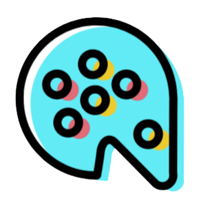

Symbol
The rabbit is seen as sensitive, kind and passive creatures. I chose the rabbit to be the mascot because not only is it cute, but I wanted to make a soft familiar looking animal that children can identify and connect with right away.
Signature
I wanted a font that looked "cute and bubbly." When I was little, I used to write in bubble words, so I wanted to incorporate that writing style into the logo. The fonts I ended up using were: DK Borubu (Kawaii) and Giddyup (Kitchen).

Color
I chose to use the rainbow style colors because it stands out and it would remind the children of rainbows = fun/happiness. It has both strong and calming colors. The colors in my previous designs were mainly calming colors such as blue and purple, but I decided to change it because the colors were too relaxing and boring to look at.